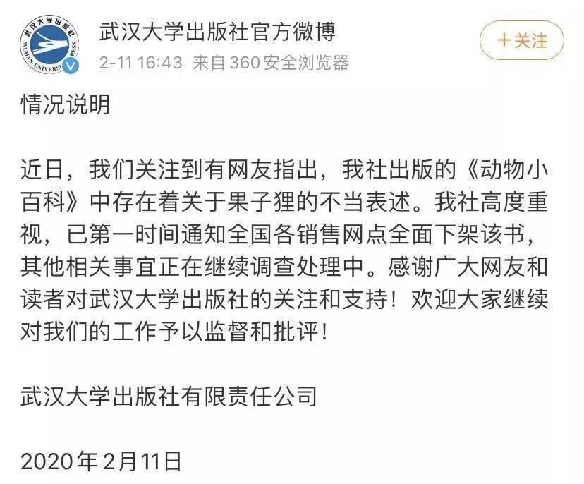

疫情之前，野味饕餮
原文链接 备份链接 文|王一然 编辑|胡大旗 “这道菜叫什么？” “不能说。” 这家餐厅看上去没有任何特别，普通大排档，招牌上都是家常菜和烧烤类食物，夏日，外面摆满塑料椅子，一楼是大厅，二楼有五六个包间。林建安30岁出头，四五年前负责公司 …

新冠疫情形势严峻，但非常重要的病毒溯源仍不清晰。
世卫组织的疫情报告显示，越来越多的证据表明，新型冠状病毒与其他已知的在蝙蝠中传播的冠状病毒存在关联，更具体地讲则是和蝙蝠的菊头蝠科存在关联。菊头蝠在中国南方以及整个亚洲、中东、非洲和欧洲广泛存在。
而中华菊头蝠，正是当年 SARS 病毒的起源。中国科学院武汉病毒研究所的研究员石正丽经过 13 年的病毒追踪溯源，最终锁定了这一目标，同时指出让 SARS 病毒传播的中间宿主是果子狸。
目前，新冠病毒的中间宿主尚未确认。
根据中国疾控中心最初的报告指出，该新型冠状病毒来源于武汉华南海鲜市场销售的野生动物。而后《柳叶刀》发表的一篇论文却发出质疑，表示此次新型冠状病毒的源头可能在其它地方，在其传播到海鲜市场后，才引发了后续的大规模集中爆发。但无论最初发源地在哪儿，“野生动物”在传播的链条上总归难以撇清关系。
 图 | 野生动物交易（来源：Shutterstock）
图 | 野生动物交易（来源：Shutterstock）
在疾控中心将源头指向华南海鲜市场之后，中国市场监管总局、农业农村部、国家林业和草原局于 1 月 21 日发布紧急通知，加强检验检疫力度，对竹鼠、獾等野生动物饲养繁育场所封控隔离，禁止转运贩卖。在 1 月 26 日，三部门再发公告，宣布在全国疫情解除之前，禁止任何野生动物交易活动。
而《自然》杂志在 2 月 11 日发布一篇题为《冠状病毒：为什么永久禁止野生动物贸易在中国行不通》（Coronavirus：why a permanent ban on wildlife trade might not work in China）的文章，其表示“中国政府自新型冠状病毒出现后临时禁止了野生动物在国内运输和销售行为，这受到了非政府性环保组织的极大欢迎，并呼吁要将禁令永久实行。但中国对野生动物制品的文化需求，可能意味着全面禁令将适得其反。”
在更早的几天，国际权威的医学杂志《柳叶刀》在 2 月 7 日刊登了一篇来自广州大学朱竑教授团队的题为《野味消费与新型冠状病毒》（Game consumption and the 2019 novel coronavirus）的评论文章。朱竑是国务院政府特殊津贴专家，也是中国地理学会常务理事、中国地理学会研学工作组主任。
在文章中朱竑教授认为，中国民间对于食药同源哲学的痴迷，以及对野生动物拥有药效的想象，这增加了自然界中的病毒感染人类的可能。要避免这一问题，则需要人们改变以往的饮食与健康观念，做到与自然和谐文明相处。
野味与中国饮食传统

谈起“吃”来，或许全球范围内也只有法国可以和中国相媲美。
作为世界唯二的美食国度，由于有着悠久的历史传统，长期以来不同地区因地理环境、气候物产、文化传统以及民族习俗等因素影响，逐步形成了人们如今熟知的“八大菜系”——粤菜、川菜、鲁菜、苏菜、浙菜、闽菜、湘菜、徽菜。
那么吃野味又是从何而来的呢？从唐代刘恂撰写的《岭表录异》中可以了解到唐代岭南道的物产与民情，其中记载最多的便是岭南人的食物，在文中就提及过鹿肉、虎肉、象肉，甚至是吃八哥和鹧鸪鸟的习俗。而另一种鸟类——猫头鹰（枭）在古代被认为是恶逆之鸟，所以古时盛行捕杀枭作枭羹，借食之以灭枭。这一习俗盛行于西周至明代，而延续至清代前中期。
而在南宋时期，周去非编写的《岭外代答》记载了宋代岭南地区（如今的两广一带）的社会经济、少数民族的生活风俗，以及物产资源等情况。文中同样也记载了当地居民吃野味的习俗。到了明代，海外贸易的兴起引入了许多海外食材，比如燕窝（燕子的吐沫）等。
这些不一定好吃、但很奇异的食物扩展了当时人们的脑洞，一些古籍上为编排蛮夷记载的奇怪食物纷纷走入酒楼，还有记录中真假难辨、有“食谱药效”的动物（穿山甲、娃娃鱼等）均受“野味珍馐”的风气所害。
到了清军入关之后，野味逐渐登上了贵胄们的餐桌，慢慢也形成了认为其“稀有少见”“象征贵族身份”的风气。清代作者袁枚所著《随园食单》，是一本记载江浙一带特色饮食的菜谱，其中便将野鸡、果子狸当做常见的一种食物。《红楼梦》第七十五回中，贾母就提过将“风腌果子狸”送给林黛玉和贾宝玉吃。
 图 | 网上爆出的武汉大学出版社出版的图书《动物小百科》中对果子狸的描述（来源：网络）
图 | 网上爆出的武汉大学出版社出版的图书《动物小百科》中对果子狸的描述（来源：网络）
其实，通过现在的科学研究，营养学家们早已证明：野生动物绝大部分并没有特殊的营养价值。同时，也有科学家不断地提醒着人们，食用野味会给人们的健康带来极大的风险，野生动物的身上均携带有大量的病菌和病毒。而在研究员石正丽发现 2003 年的 SARS 病毒源头在菊头蝠身上，并且让 SARS 病毒传播的中间宿主是果子狸的时候，就曾对外警示过“在未来，仍有可能出现新的类似 SARS 的病毒”。
虽然，果子狸早已基本都是人工养殖的，但鉴于其是危险性如此之大的病毒传播者，人们是否应该重新审视一下将其作为食物饲养的必要性？近日，有网友爆出 2015 年武汉大学出版社出版的《动物小百科》一书中，将果子狸描述为“它们的肉可以吃，是我国历史悠久的稀有山珍”。
即便从内容角度来看或许没有错误，但在人们已经经历过非典疫情之后，给孩子们做动物认知教育的书籍如此描述或许仍欠考虑。为此，武汉大学出版社在 2 月 11 日给出了官方回应，表示其出版的《动物小百科》中存在着关于果子狸的不当表述，已第一时间通知全国各销售网点全面下架该书，其他相关事宜正在继续调查处理中。
图 | 武汉大学出版社对此次事件的回应（来自：微博）
由种种细节可见，食用野味在一定程度上，已经在部分人的脑海中形成了其是稀有奇特、有特殊价值，并且能彰显身份地位的一种观念。因此，《自然》杂志上刊登的文章的态度就是，如果将禁止任何野生动物交易活动的禁令改为全面永久实行，极有可能助长不受监管控制和利润更高的非法贸易市场的扩张。
即便在没有全面禁令的过去，野生动物非法贸易，已成为继毒品和军火之外的第三大走私对象。早在 2012 年就有报道称，从东南亚到珠三角，已经形成了完整的走私野生动物贸易链，而这个链条只是为了满足国人的口腹之欲。因此，如何解决吃野味的这个问题是十分复杂的，需要通过多种抑制消费的举措来解决，比如进行旨在打破根深蒂固的传统野味饮食观念的定向教育运动等。
在《柳叶刀》的文章中，朱竑研究团队则说：为了控制像 SARS、MERS、埃博拉和新冠病毒等人畜共患病毒疾病的爆发，限制野味消费就是一个很好的办法。不过，文章同时表示：立法只是解决方案的一部分，最终的解决方案在于改变人们对美味、时尚、或者健康饮食的看法。作者相信，改变过时和不适当的食用野生动物及其制品的传统，不仅可以保护野生动物的自然栖息地，还有助于人类和其他生物的和谐共处。
除此之外，自此次新冠肺炎疫情爆发以来，人们在互联网上对“野味”的搜索关注达到了历史峰值，而讨论的热点也聚焦在“野生动物”“远离野味”“禁止交易”等关键词上。目前，在网上已经形成了呼吁大家不要再食用野味的浪潮。
 图 | 制止贩运人口和野生动植物组织的创始人 Steve Galster 表示：新冠病毒是一个大自然的报复，永久性禁令不仅可以挽救人类生命，还可以拯救全球范围内的许多野生动植物。（来源：Facebook）
图 | 制止贩运人口和野生动植物组织的创始人 Steve Galster 表示：新冠病毒是一个大自然的报复，永久性禁令不仅可以挽救人类生命，还可以拯救全球范围内的许多野生动植物。（来源：Facebook）
《野生动物保护法》或在今年进行修订
1 月 23 日《新京报》报道称：据九三学社北京市委员会官网消息，中国科学院院士、九三学社社员李景虹与其他几位社员一起组织号召医学界和法律界专家紧急研讨，并特邀民革成员、法律界专家王建平参与，通过九三学社北京市委向九三学社中央提交紧急建议——尽快修改完善立法全面禁止食用野生动物。目前，该建议已上报至全国政协。
法律专家王建平认为，在现有法律框架下，交易、运输、制售非重点保护野生动物或其产品，登记注册并获批之后是合规合法的。但正是这种“表面上”的合法活动，让这些野生动物成为疾病宿主，构成“动物—动物—人—人”传播疾病的重要根源。
而山水自然保护中心保护主任赵翔则希望，禁止一切野生动物的商业利用。他认为，以盈利为目的，利用野生动物及其产品的饮食业、保健品生产销售、展览表演、标本制售等都应该被逐步禁止，野生动物的药用也值得商榷。
随后在 2 月 10 日，全国人大常委会法工委相关负责人就疫情防控中，社会普遍关心的法律问题进行解答。法工委经济法室主任王瑞贺表示，拟将修改野生动物保护法增加列入常委会今年的立法工作计划，并加快动物防疫法等法律的修改进程。
王瑞贺指出，野生动物的交易和食用可能造成的公共卫生安全风险已经引起了世界范围内的高度重视。为了切实保障人民群众的生命安全和身体健康，各方面普遍要求进一步健全野生动物方面的法律制度，加强执法监督，严厉打击野生动物非法交易，坚决革除滥食野生动物的陋习，加强重大公共卫生安全风险的源头控制。
《野生动物保护法》在 2016 年已经作过一次系统修订，王瑞贺表示，“修改的法律实施后，野生动物的保护状况有所好转。但仍有一些问题存在。”具体体现在：首先是相关配套规定没有及时出台；其次，监督检查和执法力度不够，对一些非法野生动物交易市场没有坚决取缔、关闭，甚至在很多地方，野味市场泛滥，相关产业规模很大，构成公共卫生安全的重大隐患。
他也解释道，最后一点是因为《野生动物保护法》的立法目的主要是保护珍贵、濒危野生动物，并且采用国际通行的名录保护办法。根据目前的情况来看，有必要进一步补充完善野生动物保护法等相关法律法规，扩大法律调整范围，加大打击和惩治乱捕滥食野生动物行为的力度。
 （来自：网络）
（来自：网络）
在 2 月 14 日，天津打响了“野味全面禁令”的第一枪。天津市人大常委会通过了关于禁止食用野生动物的决定，并自公布之日起施行。决定共 18 条，主要规定了禁止食用野生动物的范围、措施、管理职责和法律责任。对于违规食用野生动物及其制品者，最高可罚其价值 10 倍的罚款。
网友们为此纷纷点赞，而天津本地人在表示支持的同时，也说道：天津的饮食风俗里，本身对野味就并不推崇；加之天津市沿海，城区中又有一条大河穿城而过，所以天津人更讲究的是吃“鲜鱼水菜”。他们认为这个决定顺应当前的局势，并希望能起到带头作用，将之推广至全国范围。
当然，倘若有一天禁止野生动物交易的禁令能在全国范围内得到全面施行，地下违法交易势必依然会“屡禁不止”。马克思曾说过：“为了 100% 的利润，资本就敢践踏一切人间法律；有 300% 以上的利润，资本就敢犯任何罪行，甚至去冒绞首的危险。”所以，禁止野味的关键，一方面在于法律与监管，另一方面则在于对人们饮食观念上的改变——毕竟，没有买卖，就没有杀害。
-End-
参考：
https://www.thelancet.com/journals/laninf/article/PIIS1473-3099(20)30063-3/fulltext
https://www.sciencedirect.com/science/article/pii/S1473309920300633
https://www.nature.com/articles/d41586-020-00377-x
https://edition.cnn.com/2020/01/27/world/coronavirus-china-bans-wildlife-trade-trnd/index.html
http://www.sohu.com/a/214264339_773843
https://so.gushiwen.org/guwen/book_253.aspx
https://new.qq.com/omn/20200122/20200122A0MCDV00.html
https://view.news.qq.com/a/20130419/000006.htm

原文链接 备份链接 文|王一然 编辑|胡大旗 “这道菜叫什么？” “不能说。” 这家餐厅看上去没有任何特别，普通大排档，招牌上都是家常菜和烧烤类食物，夏日，外面摆满塑料椅子，一楼是大厅，二楼有五六个包间。林建安30岁出头，四五年前负责公司 …
原文链接 备份链接 28.01.2020本文字数：2678，阅读时长大约4分钟 导读：随着新型冠状病毒的溯源工作的开展，华南海鲜市场几乎被锁定为疫情的源头，尽管该市场关闭前所销售的野生动物目前的去向我们不得而知，武汉官方也未做任何披露。 …
原文链接 备份链接 17年来，国家对野生动物的保护和销售不断加严。不过，监管困难重重，非法捕猎和销售多年未禁，风险仍存。 全文4285字，阅读约需8分钟 腊月二十七这天，林木决定放弃春节回老家打竹鼠吃。 前一晚，一则“武汉新型冠状病毒很 …
原文链接 备份链接 病毒的溯源、从动物到人的传播路径、人与人间的传播方式，这些研究还在进行中，抗病毒的疫苗和特效药的研发、验证，还只是初现曙光 文 |《财经》记者 孙爱民 信娜 辛颖 编辑 | 王小 谁也不会想到，2019年的最后一天， …
原文链接 备份链接 【财新网】（记者 徐路易）新冠病毒正式得名SARS-CoV-2，它引起的疾病则被正式命名为“COVID-19”。当地时间2月11日，国际病毒分类委员会（ICTV）发表声明，根据系统发育、分类学和已有的经验，冠状病毒研 …